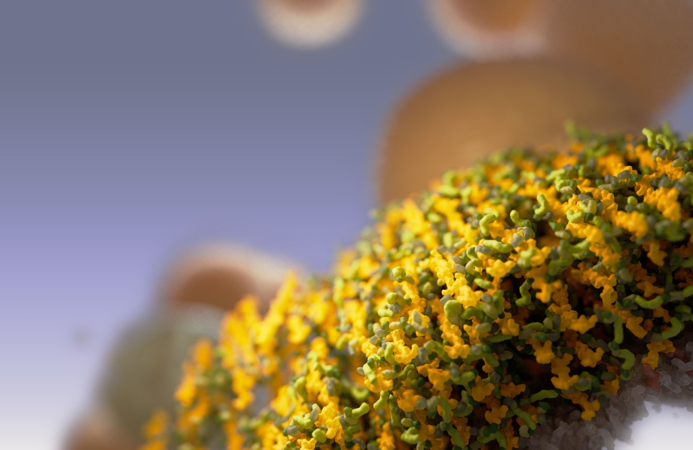
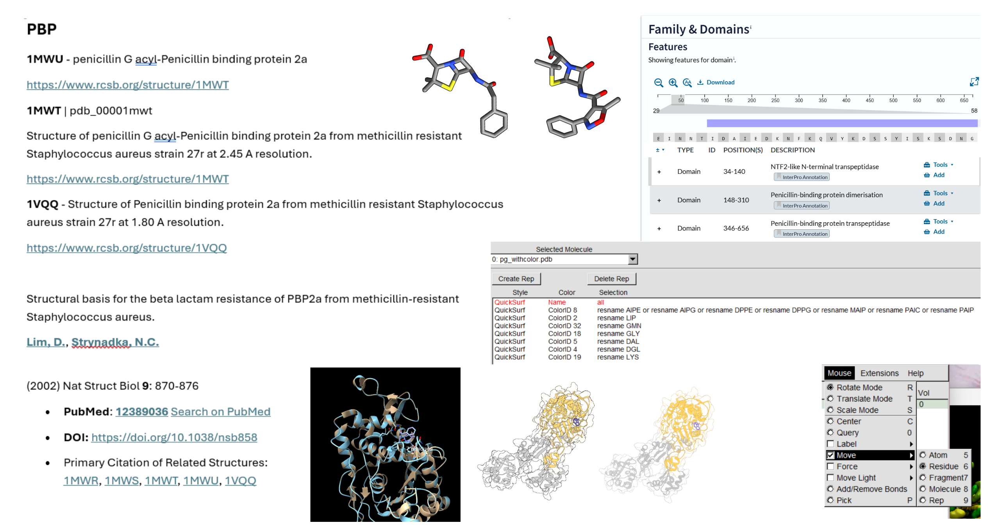
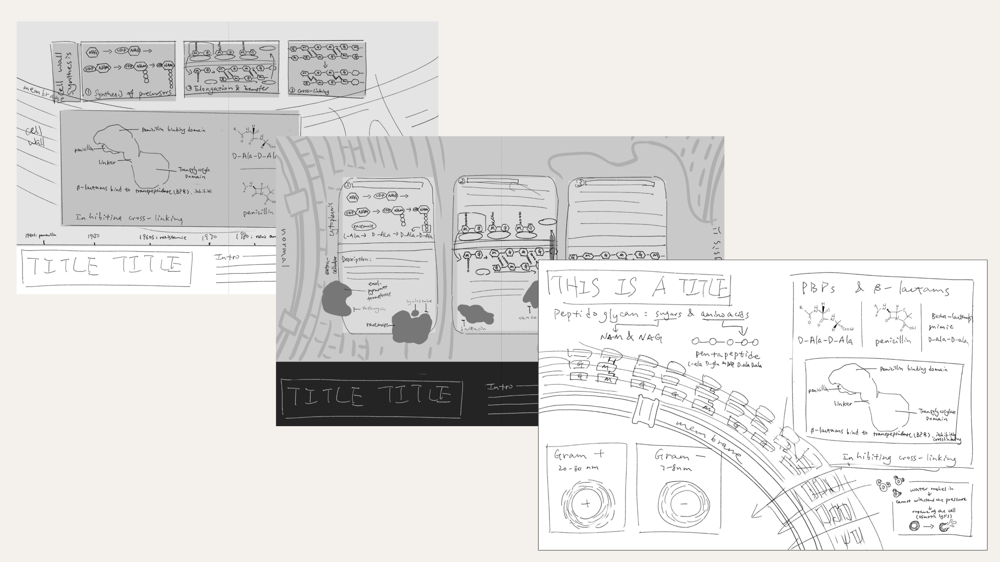
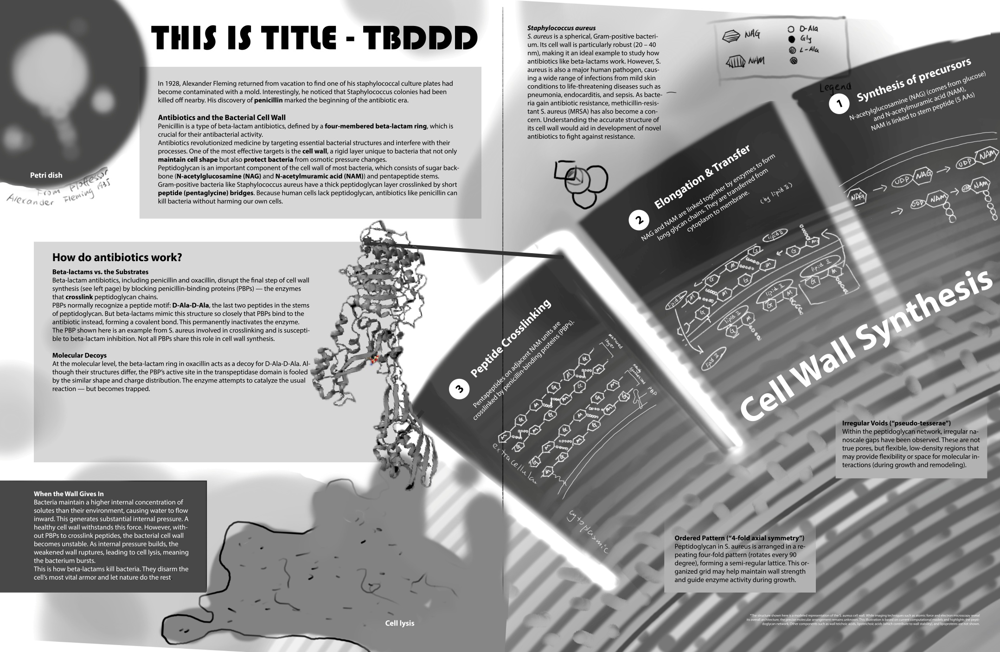
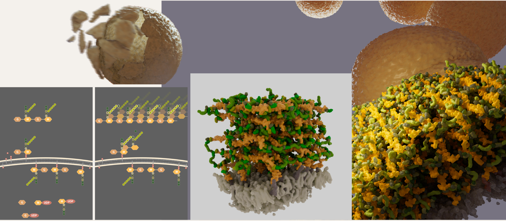
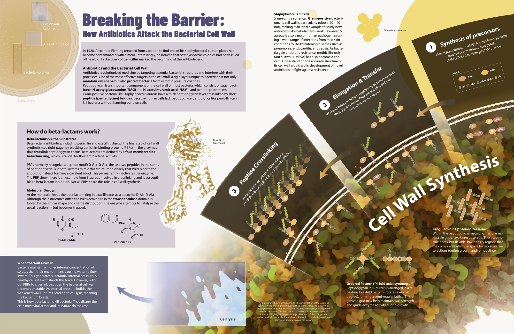
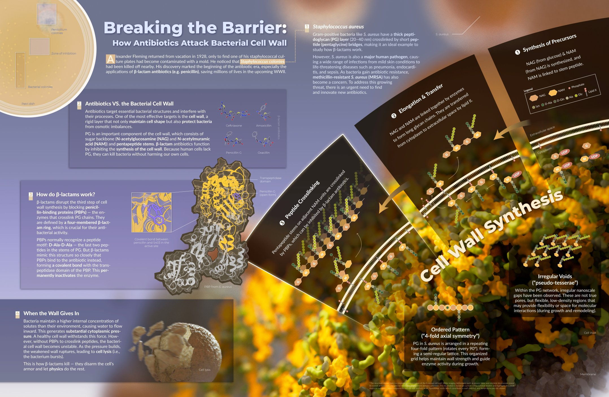

This infographic illustrates the molecular mechanism of how β-lactam antibiotics inhibit bacterial cell wall synthesis in Staphylococcus aureus, ultimately leading to cell lysis through osmotic pressure.
This work aims to explain what antibiotics such as penicillin are, and how they attack bacterial cell wall synthesis.


The workflow began with the creation of multiple thumbnails to explore composition.

These initial ideas were developed into a single refined sketch. Asset list was created based on this draft.

3D models were textured and rendered in Autodesk Maya alongside 2D vector illustrations in Adobe Illustrator.

The final composition and typography were assembled in Illustrator.
